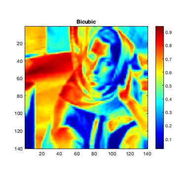

Contents
Q1
We keep the number of colours per intensity to be 200, as specified in the assignment submission instructions.
Throughout this question, we have used the following references:
1) MATLAB documentation: https://in.mathworks.com/help/matlab/examples.html?category=images_images
2) In specific, from MATLAB documentation we referred to various functions such as imagesc/imread and derivates, truesize and other image output controlling functions. We also used standard matlab functions such as imrotate to confirm the proper working of our codes as compared to the standard MATLAB implementations.
3) The following "Lectures on Image Processing" were helpful for us to understand a practical implementation of the various interpolation functions: https://ia802707.us.archive.org/23/items/Lectures_on_Image_Processing/EECE_4353_15_Resampling.pdf
Q1a

Q1b
Q1c
Q1d

Q1e
We show Barbara's face, smoothed using different methods. We observe from the results that bicubic and bilinear interpolation are clearly much better than nearest neighbor interpolation. This is also apparent from the resizing comparison in the previous subparts. The differences between Bilinear and Bicubic are subtle in this image, but bicubic stands out. This is more clearly seen on a grayscale image, which are shown in the previous subparts. On Comparison, it is clear that Bicubic interpolation performs better than Bilinear in practice.
This follows the expected results from interpolation theory - Bicubic is a 3rd degree polynomial approximation, thus it is able to capture more information of the image and smoothen out the image better. Bilinear interpolation is a linear approximation over the 2 dimensions. Nearest Neighbor is a zero-th order approximation over it's surroundings, and thus it performs significantly worse, while being the easiest to implement.
Q1f
We pad the image so as to not lose information in the rotation.